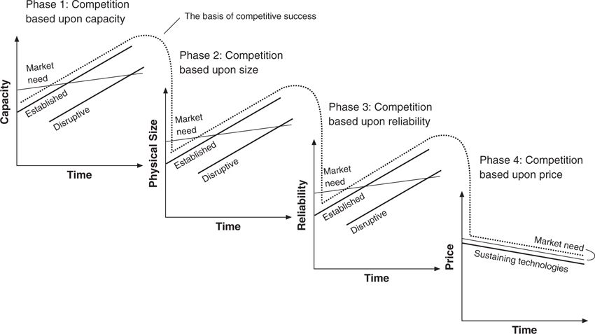

The process of commoditization of disk drives was defined by the interplay between the trajectories of what the market demanded and what the technology supplied. The 5.25-inch drive had become a price-driven commodity in the desktop market by about 1988, when the 3.5-inch drive was still at a premium price. The 5.25-inch drive, in addition, even though priced as a commodity in desktop applications, was at the same time, relative to 8-inch drives, achieving substantial price premiums in higher-tier markets. As described in chapter 4, this explains the aggressive moves upmarket made by established companies.
A product becomes a commodity within a specific market segment when the repeated changes in the basis of competition, as described above, completely play themselves out, that is, when market needs on each attribute or dimension of performance have been fully satisfied by more than one available product. The performance oversupply framework may help consultants, managers, and researchers to understand the frustrated comments they regularly hear from salespeople beaten down in price negotiations with customers: “Those stupid guys are just treating our product like it was a commodity. Can’t they see how much better our product is than the competition’s?” It may, in fact, be the case that the product offerings of competitors in a market continue to be differentiated from each other. But differentiation loses its meaning when the features and functionality have exceeded what the market demands.
Figure 9.3 Changes in the Basis of Competition in the Disk Drive Industry
